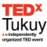

Software de la Liberación
Esta charla fue preparada para el evento TEDx Tukuy 2011. El video estará disponible en un par de meses.
¿Qué tienen en común niños de Uruguay, Autralia, México, Haití, Colombia, Paraguay, Afghanistán, Nepal, Ruanda y Perú?
...el Software que utilizan en primaria para aprender.
Soy miembro de la comunidad que produce este Software y amo lo que hago,
De hecho, desde niño, soñaba con ser inventor de juguetes.
El software es un juguete muy especial porque media entre la realidad y el usuario, recibiendo, procesando y entregando información y comportamiento.
El software está en todas partes alrededor nuestro, es invisible cuando funciona bien. Lo encontramos en semáforos, ascensores, cajeros, celulares, aviones y todo tipo de maquinaria. Dicta el funcionamiento de las cosas, por lo que es el componente esencial de cualquier tecnología.
La tecnología en sí, es solo una herramienta, y su verdadero valor depende del uso que le damos.
Evaluando el impacto social de una tecnología podemos comprender si esta es nociva o nutritiva para el sistema como un todo.
En particular, tecnologías libres son aquellas cuyo autor permite su reutilización para cualquier fin. En otras palabras, son “reciclables”. Esta libertad para el uso y transformación de una tecnología, es requisito fundamental para su apropiación.
Los niños son sorprendentes: tienen una capacidad innata de apropiar el conocimiento y combinarlo con su propia creatividad.
Solo necesitan amor y un entorno que puedan explorar.
El software que hacemos está diseñado para facilitar esta exploración a través de 3 atributos:
- La simplicidad (niños a partir de 2 años pueden usarlo)
- La reflexividad (mantiene una bitácora de las acciones del usuario)
- La colaboración (incorpora mecanismos para entablar diálogos entre usuarios, trabajar en grupo, y ejecutar proyectos)
- Direccionar el diálogo. Diseñar contenidos relevantes y abrir espacios para el intercambio.
- Actualizar el software. La mayoría de las máquinas no ha sido actualizada desde 2007. Para cerrar el ciclo de retroalimentación necesitamos actualizaciones frecuentes.
- Conectar a todos a la red. Aquí es donde existe la oportunidad más evidente para el gobierno entrante, de recoger todo el gasto que se ha hecho hasta ahora en infrastructura, y transformarlo en una inversión orgánica, llena de posibilidades para abrir nuestras mentes hacia el futuro.
Comentarios